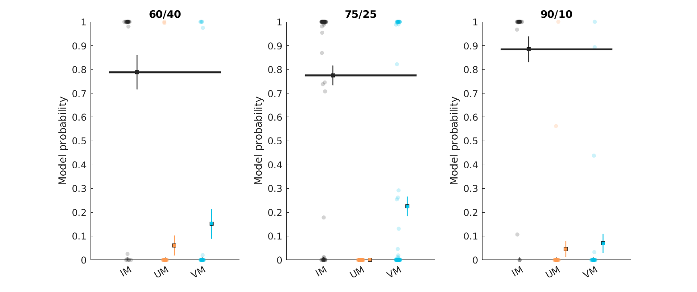

Mutual cue dependence¶
To address whether we should be fitting one cue at a time (even though they were delivered in an intermixed order) we designed two “mixing models” and compared them to a similar model fitted for each cue separately.
Models¶
Independent model (IM)¶
Definitions
\(P \in [0,1]\) … shock probability
\(t \in [1,\infty)]\) … trial
\(c = \{1,2,3\}\) … cue presented on this trial
\(o = \{0,1\}\) … ouctome (no-shock/shock)
Probability is updated on each trial using the Rescrola-Wagner equation:
where \(\alpha \in [0,1]\) is the learning rate. In all models, the \(\alpha\) is separate for for shock and no-shock trials as well as for each cue (3), which makes the total number of parameters for this model equal to 9.
Updating mixer (UM)¶
The UM model assumes that the probabilities for all cues are updated on each trial, irrespective of which cue was presented. This is achieve by estimating 3 learning rates \(\alpha\) for each cue type (3), for example for cue 1 the following three updated take place:
where \(u\) refers to the cue being updated, not presented. As before, all learning rates are estimated separately for shock and no-shock outcomes. This results in 18 free parameters in total.
Value mixer (VM)¶
The VM model only updates the relevant (presented) cue, however, it does so by mixing the current probability estimates for all three cue which are combined together using estimated weights \(w\). \(k\) here refers to the cue being mixed while \(c\) represents the current cue presented, \(Q\) is used to represent the combined probability.
We present an example of a trial when cue 1 was presented:
This results in 9 weights and additional 6 \(\alpha\) learning rates, and therefore 15 parameters in total.
Model comparison¶
BIC scores were used to calculate model probability for each participant:
The plot below whows individual weights as well as overall mean. 